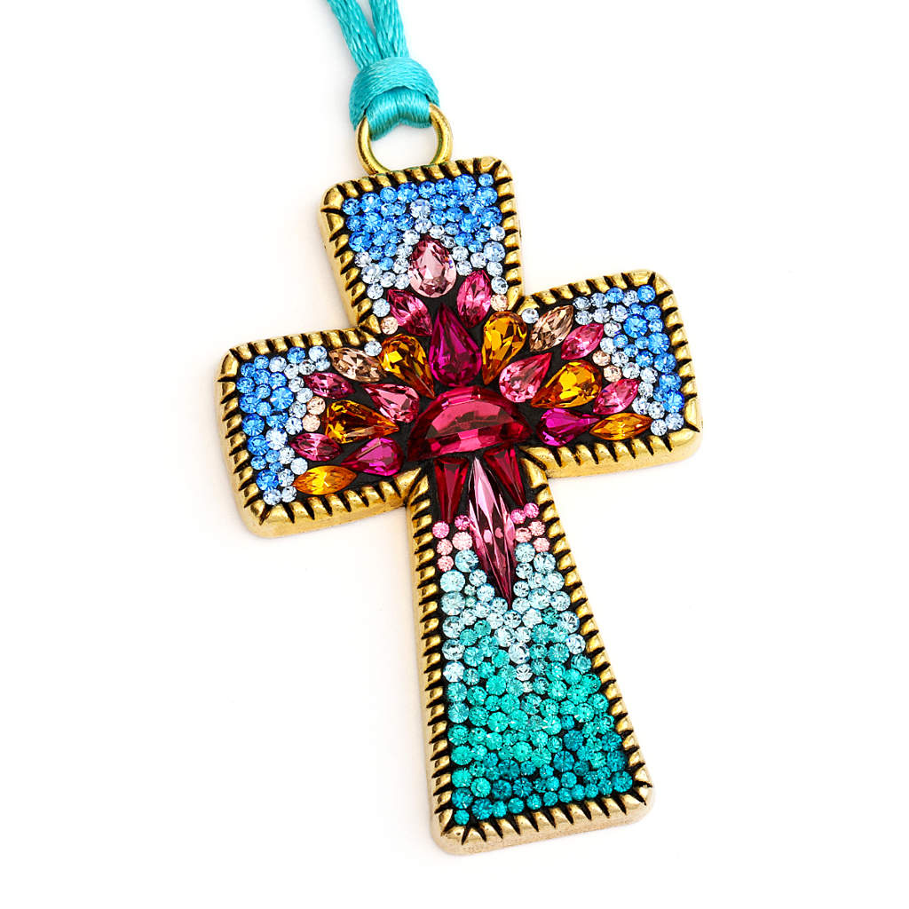
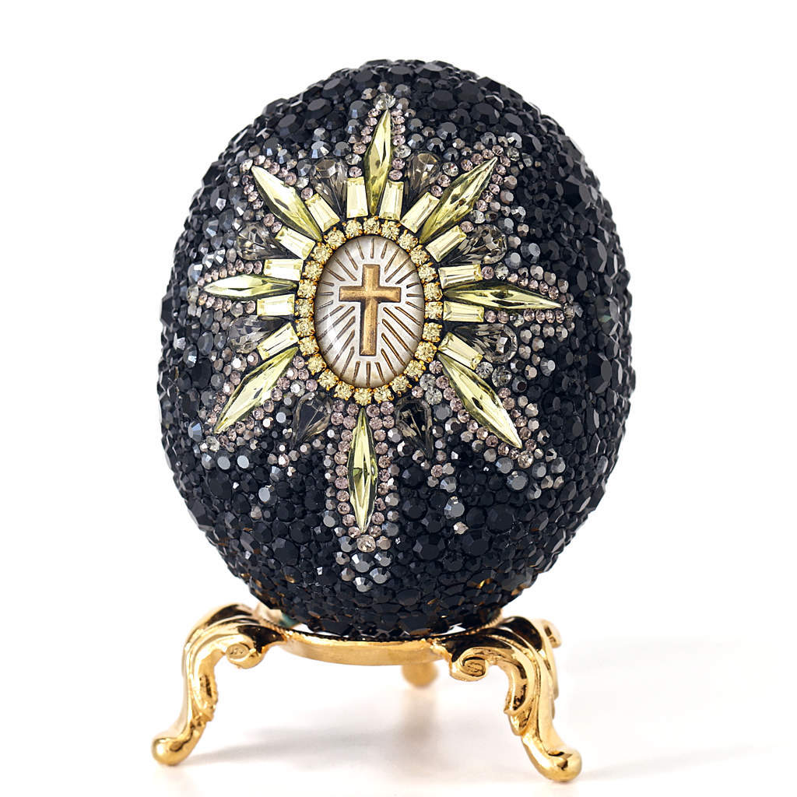

Verdonna Westcott
Visit my Etsy Shop
Sparkle like no other with our unique rhinestone jewelry and home decor!
Jewelry Gallery
Gorgeous jeweled micro-mosaic wearable art jewelry. Featuring hand sculpted original pendants, bezel shapes full of jewels, or vintage bracelets covered with dazzling glass mosaic. Jewels are hand set, pave style. Take a look!
Reflecting the Light
HOME DECOR GALLERY

Stunning decorative jeweled mosaics created from antique and vintage glass bases. Covered with sparkling jewels and accent pieces. Vases, perfume bottles, glass eggs, vanity jars, dishes and more. Beautiful one-of-a-kind treasures. Come and see…
Opulence
Labor of Love

About Me
Jeweled micro-mosaics have been my specialty, since 2008. I like making distinctive jewelry
pieces and small home accents that dazzle. I use premium quality jewels, beautiful Austrian-made
Swarovski pointed-back rhinestones, vintage Bohemian glass cabochons, beads, chain, shells, and other
rare goodies.
Each stone is set into the mosaic substrate by hand, one by one, and placed very close together pave
style, like pointillism. I use a magnifying glass for this, since many stones are so tiny. Each piece is
a unique
joyful

THIS WEBSITE IS DEDICATED TO OUR LORD JESUS CHRIST. IT IS FILLED WITH CREATIONS BY RHINESTONE MOSAIC ARTIST VERDONNA WESTCOTT. VISIT HER ETSY SHOP TO VIEW CURRENT ITEMS FOR PURCHASE. CHECK OUT HER BLOG TO SEE WHAT’S NEW AND ON HER MIND. REMEMBER, WITH JESUS BY YOUR SIDE ALL GOOD THINGS ARE POSSIBLE!